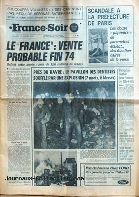

Au lieu-dit "Le Chilleau", sur la commune de La Possonnière
(Maine-et-Loire), Louis S., 66 ans, relève d'importantes traces dans un pré lui appartenant, difficile
d'accès, sur la rive droite de la Loire, entre la voie ferrée Angers-Nantes et le fleuve Bourret, Jean-Claude: Le nouveau défi des ovnis, pp. 76-81.
A Saint-Sever (Landes), plusieurs personnes toutes dignes de foi suivent durant
plusieurs minutes une cabine Apollo jaune doréMichel, Marjorie: "Février 1974 : des Ovni dans les Landes ?", Sud Ouest, 5 février 2012..
Louis S. se rend à la brigade de gendarmerie de Saint-George-sur-Loire (compagnie d'Angers,
Maine-et-Loire) pour le signaler. A toutes fins utiles, celle-ci se rend sur les lieux et fait des relevés de traces
multiples et variablement prononcées, formant très grossièrement une forme triangulaire de 5,50 m de côté.
France Soir du 23, indiquant : Soucoupes volantes : "Des cas n'ont pas reçu de réponse satisfaisante"
déclare M. Robert Galley, Ministre des Armées.

La sonde Mars 5 arrive en orbite autour de Mars.
A Toulon, MmeBarrié
(institutrice à la retraite) aperçoit, vers le sud-ouest, un gros disque lumineux qu'elle prend tout d'abord
pour la Lune - à son dernier quartier et au sud-ouest. Du disque partent des rayons lumineux tronqués qu'elle
dit ressembler à des rectangles. Sur la droite un des rayons est plus large et effilé, comme un cigare. Tout est
uniformément d'un blanc jaunâtre et donne l'impression d'une masse bien déterminée. La lumière varie
d'intensité, un peu comme le scintillement d'une étoile. Le disque paraît immobile à 45° au début, plus tard
elle constate que la hauteur angulaire s'est modifiée. , elle se décide à aller réveiller son
mari qui vient à son tour observer le phénomène. Lui aussi aperçoit un disque plus gros qu'une orange à bout de
bras, légèrement ovalisé, entouré d'un certain halo assez peu visible d'ailleurs. Il ne voit pas ce que son
épouse a vu. A mesure que le temps passe, le phénomène diminue de grosseur et Mme Barrié n'aperçoit
plus qu'un disque lumineux au sud-ouest. Les 2 témoins ont vu Vénus plein sud. Un coup de
téléphone de M. Barrié apprend que le phénomène s'est reproduit dans les mêmes conditions le 14 mars. Il en
prendra mêê photos Enquête deêrest, Klimoff, Césa pour LDLN.
A Petite île (île de la Réunion), M. Severin (21 ans)
fait une observation rapprochée Procès Verbal de Gendarmerie, publié par Jean-Claude Bourret.
Sur France Inter, Jean-Claude Bourret interviewe le Ministre des Armées, Robert
Galley, sur le sujet des ovnis. Celui-ci admet l'intérêt scientifique du problème et indique la marche à suivre pour
envoyer les rapports d'observation à Claude Poher du CNES.